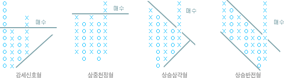
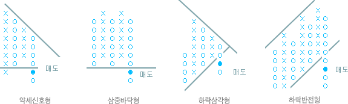

주식교실 ㅣ 기술적분석
사소한 주가변화와 기간개념을 무시하고 의미 있다고 여겨지는 변화만을 표시함으로써 주가의 추세를 파악하고자 하는 투자기법입니다.
- 시계열을 무시한 것이지만 그 자체로 주가의 장기 추세 파악이 가능하다.
- 자체의 패턴분석에 의한 매매신호로 가르쳐 준다.
- 시계열이 무시되어 X축이 절약됨으로써 좁은 지면에 장기간의 기록이 가능한다.
- 주가예측에서 어려운 목표치계산 이 가능하다는 점 등 다른 지표에서 찾아볼 수 없는 폭넓은 활용도를 갖고 있다.
- 한 칸의 가격폭을 결정하되 해당 주가의 가격수준을 판단하여 고주가이면 폭을 크게하고 저주가이면 작게 한다.
- 주가가 상승할때는 X표로, 하락할 때는 O표로 구분하여 주가가 계속 상승할 때는 X표만을, 계속 하락할 때는 Y표축에 표시한다.
- 주가가 상승에서 하락으로 반전될 때는 X표에서 O표로 바꾸되 한 칸 아래에 표시하고 하락에서 상승하면 O표에서 X표로 바뀌되 한 칸 위에 표시한다.

